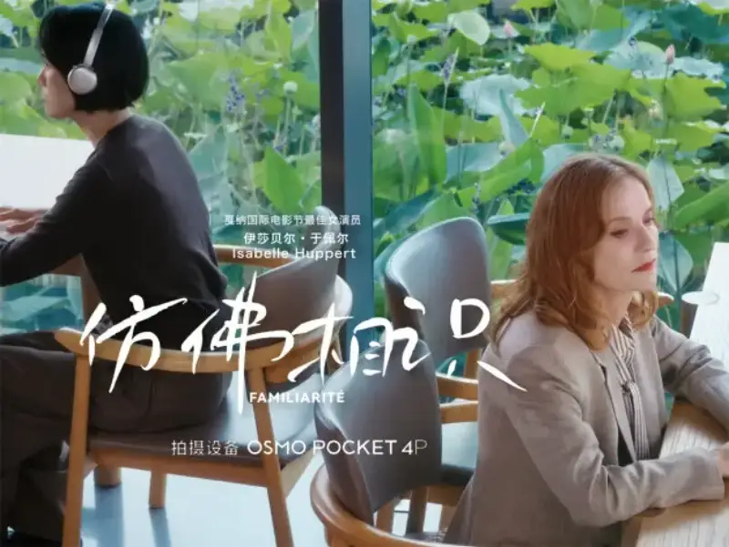
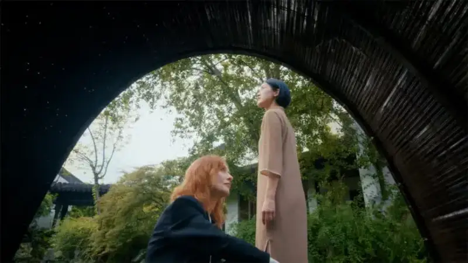

(Beijing, August 6, 2026)DJI has released the original short film Familiarite. It stars Isabelle Huppert, winner of Best Actress at the Cannes Film Festival. It was shot entirely on DJI's first dual-main-camera pocket cinema camera, the Osmo Pocket 4P. It tells a conversation between women across time.

One best actress, and one pocket cinema camera
Huppert has worked in film for more than fifty years and over a hundred films. She has twice won Best Actress at Cannes and twice at Venice, and she has a Golden Globe and an Oscar nomination. She is one of the most awarded actresses in European film. With films such as The Piano Teacher, Elle, and Things to Come, she is seen as a French national treasure.
In Familiarite, Huppert is more than an actress. As both performer and creative director, she helped shape the film. Her skill shows in acting that does not pile up words. One look, one deeply restrained micro-expression, carries the deepest feeling. The key of this acting is the truth in front of the lens. When the actress is relaxed and open, the emotion flows. Familiarite lets this acting unfold at ease through the Osmo Pocket 4P.
A conversation between women across time
Familiarite has no traditional plot. It is a conversation between two women across time.
One is the 19th-century French writer George Sand (1804-1876), who used a male pen name to win her place in literature. The other is the Song dynasty poet Li Qingzhao (1084-1155), who, in a troubled age, used her rare talent to secure her lasting place as a leading poet of the graceful school of Song lyrics.
In the short film, they meet through a dialogue between Huppert and a Chinese girl, forming a Familiarite that crosses time and culture. George Sand's poem A Aurore runs through the film. The whole film is presented in silence. The story is not in the lines but in Huppert's gaze, in the smallest change of her eyes and brows. Here, reading, listening, and gazing are themselves the storytelling.
Let the lens itself tell the story
The short film was shot in a traditional Chinese garden, entirely on the Osmo Pocket 4P. The flowing sunlight, dappled tree shadows, and rippling water set a poetic mood that echoes George Sand's lines. In this scene of mixed light and shadow and changing contrast, the 17-stop dynamic range comes into play. The sunlit garden and the face in shadow both keep rich layers without losing detail. The D-Log2 color curve also leaves room for color grading in post.
The dual cameras of the Osmo Pocket 4P, in multiple focal lengths, give a cinematic feel from near to far. The 20mm wide lens places each character in its own space and shows the relation of person and setting through wide and medium shots, with doors, columns, and bookshelves as layers. Each push-in, pull-back, or slow pan feels like a shift in time and space. At the 60mm portrait length, the frame narrows to close-ups. Branch shadows and objects blur naturally, and the eye is drawn to Huppert's smallest expression: a lift or fall of the eyes, a twitch of the mouth, all enlarged clearly. From wide shot to close-up, the frame builds and echoes under the dual cameras, forming the complete rhythm of the film.
The three-axis mechanical gimbal links these views smoothly. The lens is a quiet observer that glides between the person and the shot size. It follows Huppert through the corridors, past figures, tree shadows, shelves, and doorframes, and drifts among the layers of foreground. Each move and transition in the film is quiet and steady, unseen, yet always leads the viewer's eye.
How a pocket cinema camera that does not intrude frees the acting
The Osmo Pocket 4P is extremely light and fits in a pocket. On set, it is so small that you almost forget it is there. The camera no longer presses in or feels imposing. It steps aside and lets Huppert enter her most relaxed, open state, so that the smallest changes in emotion can be recorded.
Huppert said in an interview: With this almost invisible tool, we still get a picture of such amazing clarity and precision. It can catch the emotion on a face with such delicacy, and the feeling that flows between me and my partner. In her view, the gear and technique here do not lead or interfere with the acting. They set it free.
This non-intrusion was proved again and again on set. One scene was in a narrow cabin. Director Wang Wendong used the small body of the Pocket 4P to go into the cabin alone, hand-held and close, making smooth moves a traditional cinema camera could not, while another camera on shore kept its own framing without spoiling the shot. The photographer Chris found that he could pick up the camera and shoot at once, catching the moment the actress was most natural, without the usual start-roll ritual.

This light, close, low-intrusion quality let Huppert perform and move on set with minimal gear and more freedom. It let the director and photographer put more energy into talking with the actress, and it let a pocket cinema camera carry delicate cinematic expression.
Let a cinematic feel belong to more than big sets
Familiarite shows that cinematic standards of acting and image can be met by one pocket cinema camera. Professional filmmaking no longer depends only on large teams and heavy gear. That is the value of the Osmo Pocket 4P. It lowers the bar for a cinematic feel, so more creators can approach industry-grade expression at lower cost, with smaller teams and more freedom.
This confidence comes from DJI's years of professional imaging. Behind the Osmo Pocket 4P is DJI's long work in mechanics, gimbals, control, imaging, and miniaturization. From drones, the Ronin stabilizer to the Ronin 4D cinema camera, and to the Pocket series, DJI has done one thing: bring the powers of professional creation to more users. A cinematic feel is moving from big sets to the age of creation on the go. Through this work with Huppert, the Osmo Pocket 4P marks an upgrade of the Pocket series, from a portable imaging tool to a device trusted by more professional film performers and creators.
Familiarite is now released on DJI's official platform. Through this short film, DJI wants to show more of what the Osmo Pocket 4P can do in professional imaging. It is not only a portable shooting tool. It can also be a flexible imaging solution for small teams, independent creators, and professional work.